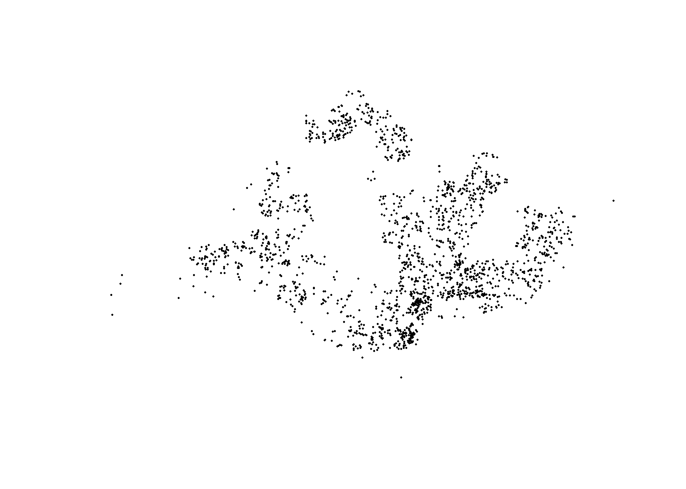
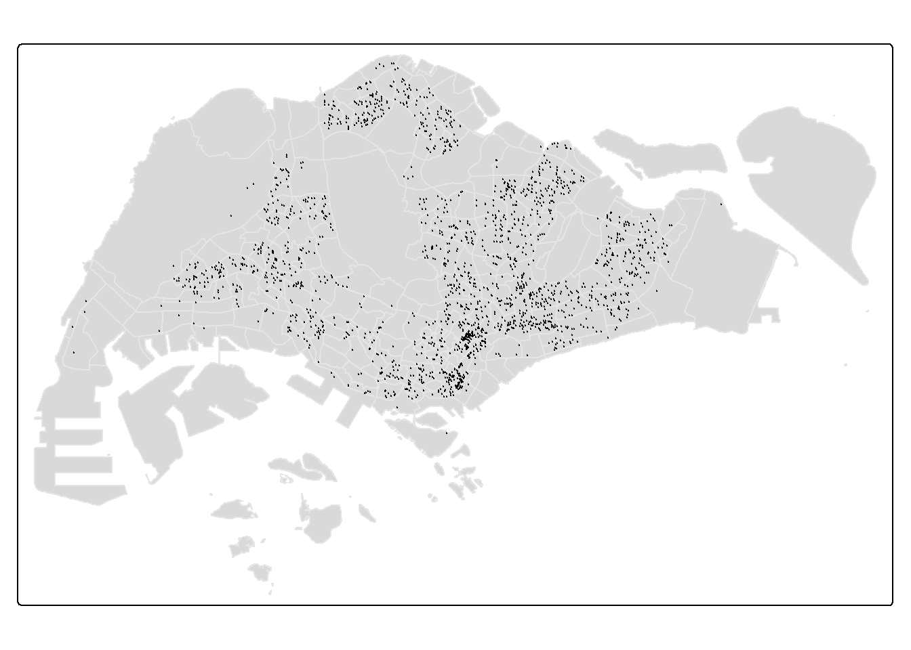
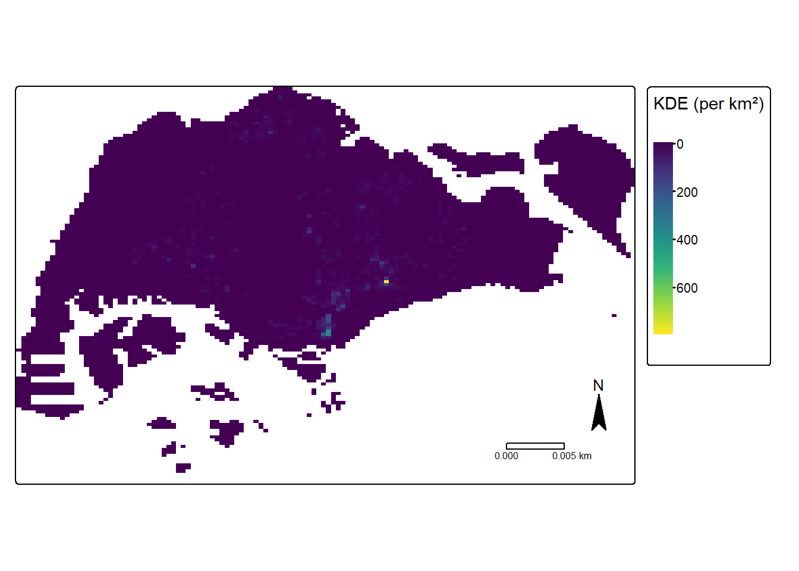
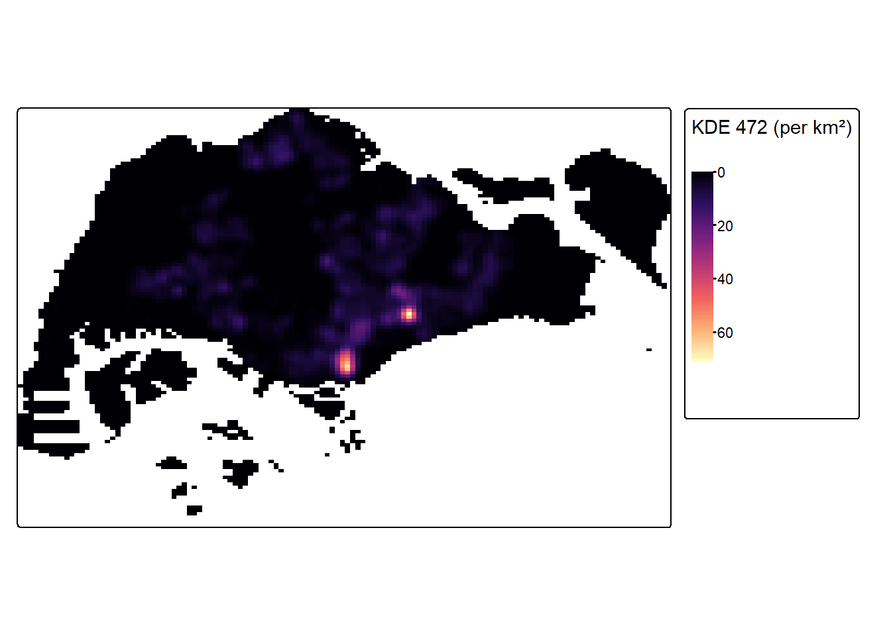
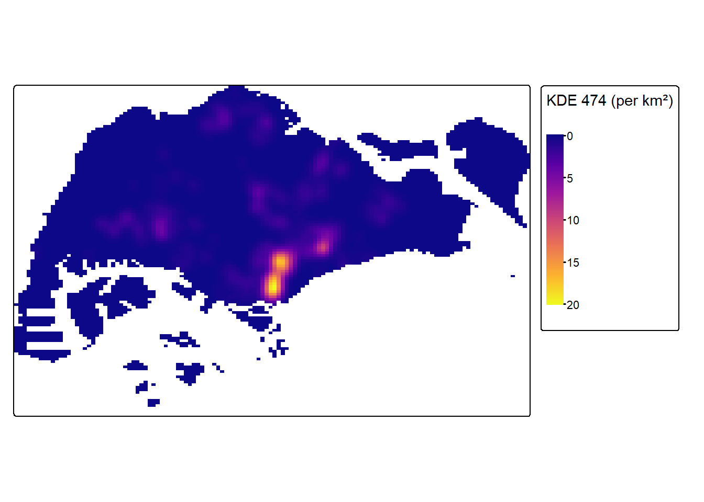
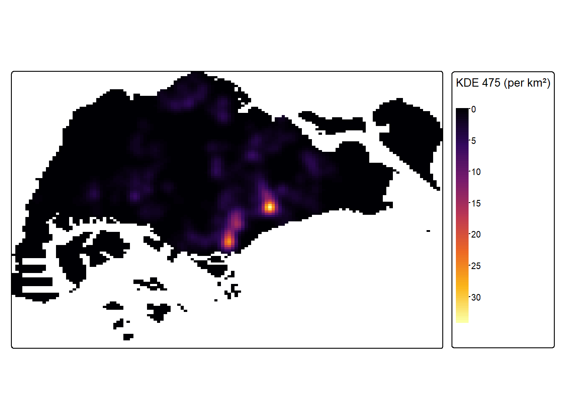
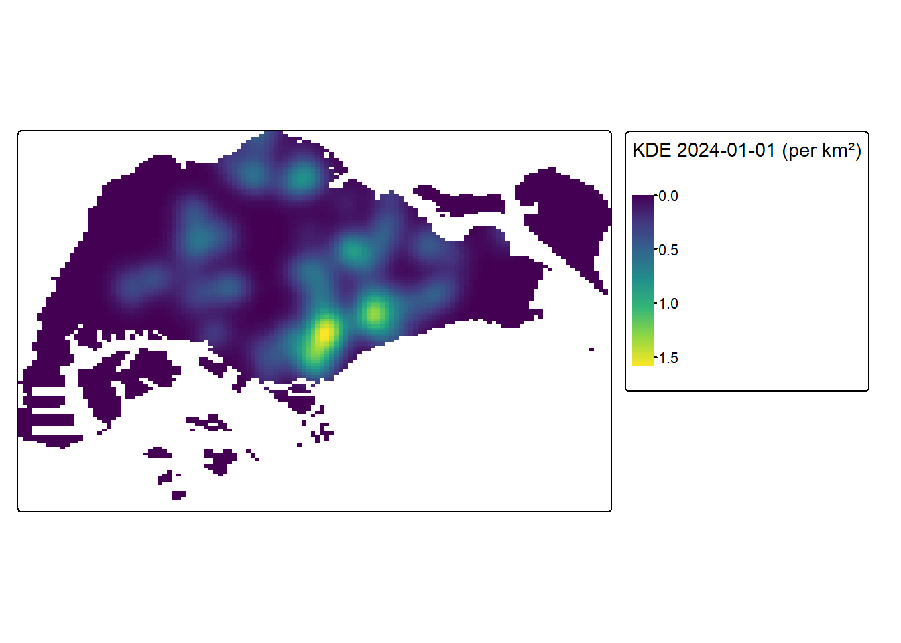
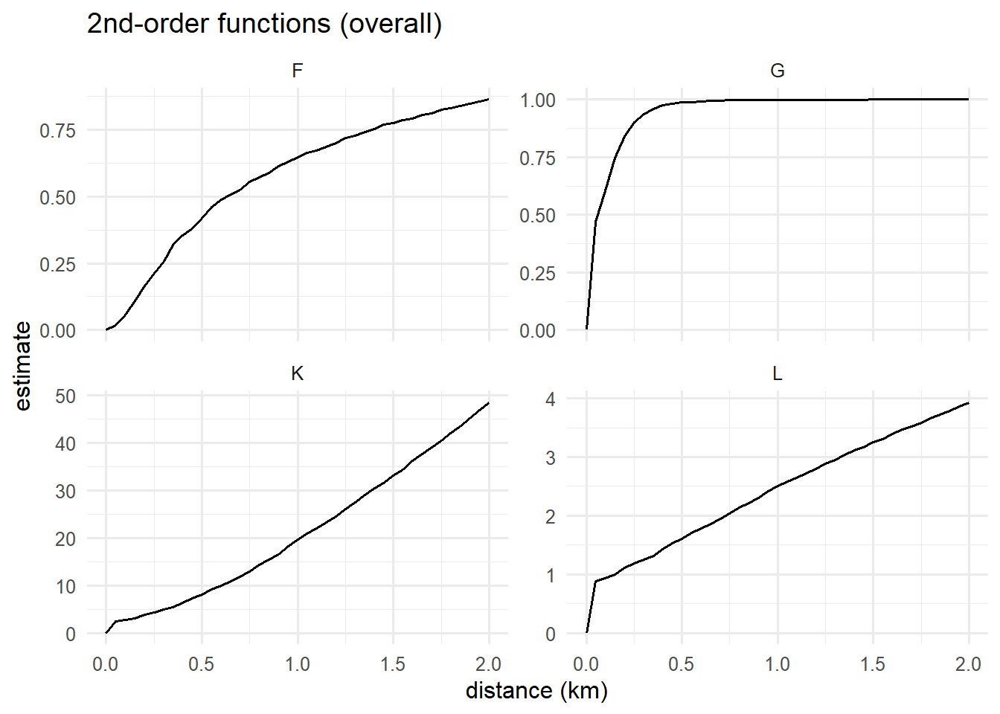
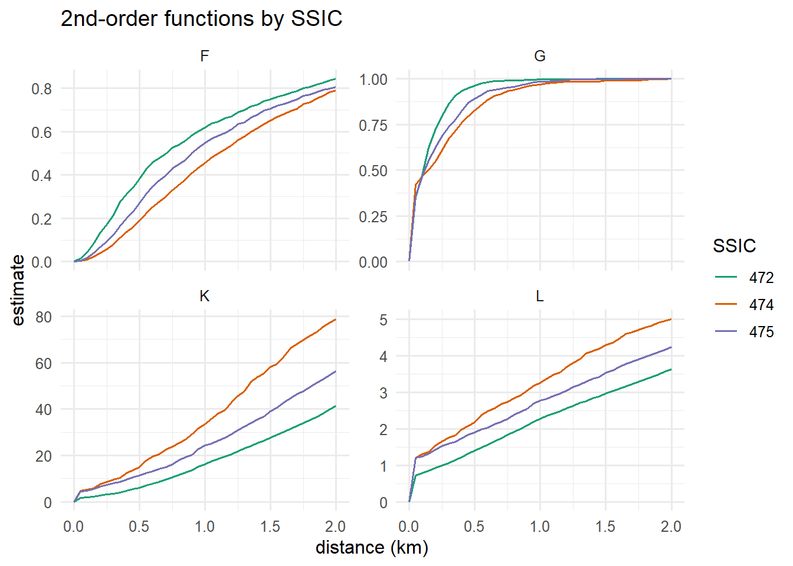
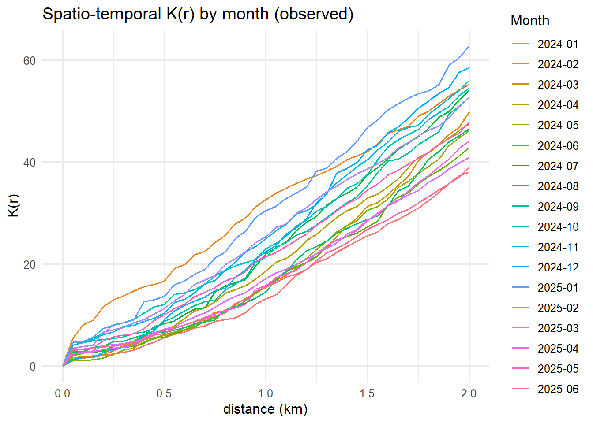

pacman::p_load(sf, spNetwork, spatstat, raster, tmap, tidyverse, classInt, gifski,readxl, dplyr, purrr)Take Home exercise 1
2 Installing the required R packages
| Package | Description |
|---|---|
| sf | Provides functions to manage, processing, and manipulate Simple Features, a formal geospatial data standard that specifies a storage and access model of spatial geometries such as points, lines, and polygons. |
| spNetwork | Provides functions to perform Spatial Point Patterns Analysis such as kernel density estimation (KDE) and K-function on network. It also can be used to build spatial matrices (‘listw’ objects like in ‘spdep’ package) to conduct any kind of traditional spatial analysis with spatial weights based on reticular distances. |
| spatstat | Provides functions for spatial statistics with a strong focus on analysing spatial point patterns. |
| raster | Provides functions which reads, writes, manipulates, analyses and model of gridded spatial data (i.e. raster). In this hands-on exercise, it will be used to convert image output generate by spatstat into raster format. |
| tidyverse | Provides collection of functions for performing data science task such as importing, tidying, wrangling data and visualising data. |
| tmap | Provides functions for plotting cartographic quality static point patterns maps or interactive maps by using leaflet API |
| classInt | Provides functions for choosing univariate class intervals for mapping or other graphics purposes. |
| gifski | Provides functions to converts images to GIF animations using pngquant’s efficient cross-frame palettes and temporal dithering with thousands of colors per frame. |
3 The Data
# from the project root
# if _quarto.yml is in Take_home_Ex01/
data_dir <- file.path("Data", "ACRAInformationonCorporateEntities")
# or with here():
# data_dir <- here::here("Data", "ACRAInformationonCorporateEntities")
# sanity checks
getwd() # should be the project root[1] "C:/Users/kchan/Desktop/chandru-ko/ISSS608-VAA/Take-home_Ex/Take_home_Ex01"dir.exists(data_dir) # TRUE if path is right[1] TRUElist.files(data_dir)[1:5] # quick peek[1] "ACRA Information on Corporate Entities ('A').csv"
[2] "ACRA Information on Corporate Entities ('B').csv"
[3] "ACRA Information on Corporate Entities ('C').csv"
[4] "ACRA Information on Corporate Entities ('D').csv"
[5] "ACRA Information on Corporate Entities ('E').csv"library(readr)
library(purrr)
library(dplyr)
# list all CSVs
files <- list.files("Data/ACRAInformationonCorporateEntities",
pattern = "\\.csv$", full.names = TRUE)
length(files) # how many files?[1] 27head(basename(files))[1] "ACRA Information on Corporate Entities ('A').csv"
[2] "ACRA Information on Corporate Entities ('B').csv"
[3] "ACRA Information on Corporate Entities ('C').csv"
[4] "ACRA Information on Corporate Entities ('D').csv"
[5] "ACRA Information on Corporate Entities ('E').csv"
[6] "ACRA Information on Corporate Entities ('F').csv"acra_all <- files |>
set_names(basename(files)) |>
map_dfr(~ read_csv(.x,
col_types = cols(.default = col_character()),
guess_max = 100000,
show_col_types = FALSE),
.id = "source_file")glimpse(acra_all)Rows: 2,026,935
Columns: 54
$ source_file <chr> "ACRA Information on Corporate Entit…
$ uen <chr> "00022100K", "00031800X", "00043100A…
$ issuance_agency_id <chr> "ACRA", "ACRA", "ACRA", "ACRA", "ACR…
$ entity_name <chr> "A Y ABDUL RAHIMAN", "A M ABDULLAH S…
$ entity_type_description <chr> "Sole Proprietorship/ Partnership", …
$ business_constitution_description <chr> "Partnership", "Partnership", "Partn…
$ company_type_description <chr> "na", "na", "na", "na", "na", "na", …
$ paf_constitution_description <chr> "na", "na", "na", "na", "na", "na", …
$ entity_status_description <chr> "Terminated", "Terminated", "Termina…
$ registration_incorporation_date <chr> "1974-10-09", "1974-10-12", "1974-09…
$ uen_issue_date <chr> "1974-10-09", "1974-10-12", "1974-09…
$ address_type <chr> "LOCAL", "LOCAL", "LOCAL", "LOCAL", …
$ block <chr> "51", "93", "178", "21", "30", "38A"…
$ street_name <chr> "EAST COAST ROAD", "MARKET STREET", …
$ level_no <chr> "na", "10", "na", "na", "na", "na", …
$ unit_no <chr> "na", "01", "na", "na", "na", "na", …
$ building_name <chr> "na", "na", "na", "na", "na", "na", …
$ postal_code <chr> "428770", "0104", "0718", "0923", "4…
$ other_address_line1 <chr> "na", "na", "na", "na", "na", "na", …
$ other_address_line2 <chr> "na", "na", "na", "na", "na", "na", …
$ account_due_date <chr> "na", "na", "na", "na", "na", "na", …
$ annual_return_date <chr> "na", "na", "na", "na", "na", "na", …
$ primary_ssic_code <chr> "47722", "46301", "68104", "56111", …
$ primary_ssic_description <chr> "na", "na", "na", "na", "na", "na", …
$ primary_user_described_activity <chr> "na", "na", "na", "na", "na", "na", …
$ secondary_ssic_code <chr> "na", "32909", "na", "56122", "na", …
$ secondary_ssic_description <chr> "na", "na", "na", "na", "na", "na", …
$ secondary_user_described_activity <chr> "na", "na", "na", "na", "na", "na", …
$ no_of_officers <chr> "7", "6", "3", "1", "5", "2", "2", "…
$ former_entity_name1 <chr> "na", "na", "na", "na", "na", "na", …
$ former_entity_name2 <chr> "na", "na", "na", "na", "na", "na", …
$ former_entity_name3 <chr> "na", "na", "na", "na", "na", "na", …
$ former_entity_name4 <chr> "na", "na", "na", "na", "na", "na", …
$ former_entity_name5 <chr> "na", "na", "na", "na", "na", "na", …
$ former_entity_name6 <chr> "na", "na", "na", "na", "na", "na", …
$ former_entity_name7 <chr> "na", "na", "na", "na", "na", "na", …
$ former_entity_name8 <chr> "na", "na", "na", "na", "na", "na", …
$ former_entity_name9 <chr> "na", "na", "na", "na", "na", "na", …
$ former_entity_name10 <chr> "na", "na", "na", "na", "na", "na", …
$ former_entity_name11 <chr> "na", "na", "na", "na", "na", "na", …
$ former_entity_name12 <chr> "na", "na", "na", "na", "na", "na", …
$ former_entity_name13 <chr> "na", "na", "na", "na", "na", "na", …
$ former_entity_name14 <chr> "na", "na", "na", "na", "na", "na", …
$ former_entity_name15 <chr> "na", "na", "na", "na", "na", "na", …
$ uen_of_audit_firm1 <chr> "na", "na", "na", "na", "na", "na", …
$ name_of_audit_firm1 <chr> "na", "na", "na", "na", "na", "na", …
$ uen_of_audit_firm2 <chr> "na", "na", "na", "na", "na", "na", …
$ name_of_audit_firm2 <chr> "na", "na", "na", "na", "na", "na", …
$ uen_of_audit_firm3 <chr> "na", "na", "na", "na", "na", "na", …
$ name_of_audit_firm3 <chr> "na", "na", "na", "na", "na", "na", …
$ uen_of_audit_firm4 <chr> "na", "na", "na", "na", "na", "na", …
$ name_of_audit_firm4 <chr> "na", "na", "na", "na", "na", "na", …
$ uen_of_audit_firm5 <chr> "na", "na", "na", "na", "na", "na", …
$ name_of_audit_firm5 <chr> "na", "na", "na", "na", "na", "na", …Filter out the required business entities
library(dplyr)
library(stringr)
business <- acra_all %>%
mutate(
primary_ssic_code = as.character(primary_ssic_code),
primary_ssic_code = na_if(str_trim(primary_ssic_code), "na")
) %>%
filter(!is.na(primary_ssic_code),
str_detect(primary_ssic_code, "^(472|474|475)"))glimpse(business)Rows: 62,281
Columns: 54
$ source_file <chr> "ACRA Information on Corporate Entit…
$ uen <chr> "00100500J", "00202400D", "00205900B…
$ issuance_agency_id <chr> "ACRA", "ACRA", "ACRA", "ACRA", "ACR…
$ entity_name <chr> "A K NAINA MOHAMED", "ANG LEONG HUAT…
$ entity_type_description <chr> "Sole Proprietorship/ Partnership", …
$ business_constitution_description <chr> "Sole-Proprietor", "Sole-Proprietor"…
$ company_type_description <chr> "na", "na", "na", "na", "na", "na", …
$ paf_constitution_description <chr> "na", "na", "na", "na", "na", "na", …
$ entity_status_description <chr> "Terminated", "Terminated", "Termina…
$ registration_incorporation_date <chr> "1974-09-19", "1974-09-27", "1974-09…
$ uen_issue_date <chr> "1974-09-19", "1974-09-27", "1974-09…
$ address_type <chr> "LOCAL", "LOCAL", "LOCAL", "LOCAL", …
$ block <chr> "233", "20", "33", "67", "12", "67",…
$ street_name <chr> "MIDDLE ROAD", "WELD ROAD", "PURVIS …
$ level_no <chr> "na", "na", "na", "07", "na", "01", …
$ unit_no <chr> "na", "na", "na", "04", "na", "222",…
$ building_name <chr> "na", "na", "na", "SATNAM HOUSE", "n…
$ postal_code <chr> "0718", "207239", "188610", "179431"…
$ other_address_line1 <chr> "na", "na", "na", "na", "na", "na", …
$ other_address_line2 <chr> "na", "na", "na", "na", "na", "na", …
$ account_due_date <chr> "na", "na", "na", "na", "na", "na", …
$ annual_return_date <chr> "na", "na", "na", "na", "na", "na", …
$ primary_ssic_code <chr> "47230", "47220", "47212", "47510", …
$ primary_ssic_description <chr> "na", "na", "na", "na", "na", "na", …
$ primary_user_described_activity <chr> "na", "na", "na", "na", "na", "na", …
$ secondary_ssic_code <chr> "46100", "46900", "na", "na", "na", …
$ secondary_ssic_description <chr> "na", "na", "na", "na", "na", "na", …
$ secondary_user_described_activity <chr> "na", "na", "na", "na", "na", "na", …
$ no_of_officers <chr> "1", "3", "1", "4", "3", "2", "4", "…
$ former_entity_name1 <chr> "na", "na", "na", "na", "na", "na", …
$ former_entity_name2 <chr> "na", "na", "na", "na", "na", "na", …
$ former_entity_name3 <chr> "na", "na", "na", "na", "na", "na", …
$ former_entity_name4 <chr> "na", "na", "na", "na", "na", "na", …
$ former_entity_name5 <chr> "na", "na", "na", "na", "na", "na", …
$ former_entity_name6 <chr> "na", "na", "na", "na", "na", "na", …
$ former_entity_name7 <chr> "na", "na", "na", "na", "na", "na", …
$ former_entity_name8 <chr> "na", "na", "na", "na", "na", "na", …
$ former_entity_name9 <chr> "na", "na", "na", "na", "na", "na", …
$ former_entity_name10 <chr> "na", "na", "na", "na", "na", "na", …
$ former_entity_name11 <chr> "na", "na", "na", "na", "na", "na", …
$ former_entity_name12 <chr> "na", "na", "na", "na", "na", "na", …
$ former_entity_name13 <chr> "na", "na", "na", "na", "na", "na", …
$ former_entity_name14 <chr> "na", "na", "na", "na", "na", "na", …
$ former_entity_name15 <chr> "na", "na", "na", "na", "na", "na", …
$ uen_of_audit_firm1 <chr> "na", "na", "na", "na", "na", "na", …
$ name_of_audit_firm1 <chr> "na", "na", "na", "na", "na", "na", …
$ uen_of_audit_firm2 <chr> "na", "na", "na", "na", "na", "na", …
$ name_of_audit_firm2 <chr> "na", "na", "na", "na", "na", "na", …
$ uen_of_audit_firm3 <chr> "na", "na", "na", "na", "na", "na", …
$ name_of_audit_firm3 <chr> "na", "na", "na", "na", "na", "na", …
$ uen_of_audit_firm4 <chr> "na", "na", "na", "na", "na", "na", …
$ name_of_audit_firm4 <chr> "na", "na", "na", "na", "na", "na", …
$ uen_of_audit_firm5 <chr> "na", "na", "na", "na", "na", "na", …
$ name_of_audit_firm5 <chr> "na", "na", "na", "na", "na", "na", …adding the ssic code as a seperate column
business <- business %>%
mutate(ssic3 = substr(primary_ssic_code, 1, 3))business %>% count(ssic3, sort = TRUE)# A tibble: 3 × 2
ssic3 n
<chr> <int>
1 472 25202
2 475 20400
3 474 16679Keep a label for each SSIC band:
ssic_lookup <- tibble::tribble(
~ssic3, ~ssic_label,
"472", "Retail sale of food, beverages & tobacco (specialised stores)",
"474", "Retail sale of information & communications equipment (specialised stores)",
"475", "Retail sale of other household equipment (specialised stores)"
)
business <- business %>% left_join(ssic_lookup, by = "ssic3")Extract the business entities registered between 1st January 2024 to 30th June 2025
library(lubridate)
business_recent <- business %>%
mutate(uen_issue_date = ymd(uen_issue_date)) %>%
filter(uen_issue_date >= ymd("2024-01-01"),
uen_issue_date <= ymd("2025-06-30"))glimpse(business)Rows: 62,281
Columns: 56
$ source_file <chr> "ACRA Information on Corporate Entit…
$ uen <chr> "00100500J", "00202400D", "00205900B…
$ issuance_agency_id <chr> "ACRA", "ACRA", "ACRA", "ACRA", "ACR…
$ entity_name <chr> "A K NAINA MOHAMED", "ANG LEONG HUAT…
$ entity_type_description <chr> "Sole Proprietorship/ Partnership", …
$ business_constitution_description <chr> "Sole-Proprietor", "Sole-Proprietor"…
$ company_type_description <chr> "na", "na", "na", "na", "na", "na", …
$ paf_constitution_description <chr> "na", "na", "na", "na", "na", "na", …
$ entity_status_description <chr> "Terminated", "Terminated", "Termina…
$ registration_incorporation_date <chr> "1974-09-19", "1974-09-27", "1974-09…
$ uen_issue_date <chr> "1974-09-19", "1974-09-27", "1974-09…
$ address_type <chr> "LOCAL", "LOCAL", "LOCAL", "LOCAL", …
$ block <chr> "233", "20", "33", "67", "12", "67",…
$ street_name <chr> "MIDDLE ROAD", "WELD ROAD", "PURVIS …
$ level_no <chr> "na", "na", "na", "07", "na", "01", …
$ unit_no <chr> "na", "na", "na", "04", "na", "222",…
$ building_name <chr> "na", "na", "na", "SATNAM HOUSE", "n…
$ postal_code <chr> "0718", "207239", "188610", "179431"…
$ other_address_line1 <chr> "na", "na", "na", "na", "na", "na", …
$ other_address_line2 <chr> "na", "na", "na", "na", "na", "na", …
$ account_due_date <chr> "na", "na", "na", "na", "na", "na", …
$ annual_return_date <chr> "na", "na", "na", "na", "na", "na", …
$ primary_ssic_code <chr> "47230", "47220", "47212", "47510", …
$ primary_ssic_description <chr> "na", "na", "na", "na", "na", "na", …
$ primary_user_described_activity <chr> "na", "na", "na", "na", "na", "na", …
$ secondary_ssic_code <chr> "46100", "46900", "na", "na", "na", …
$ secondary_ssic_description <chr> "na", "na", "na", "na", "na", "na", …
$ secondary_user_described_activity <chr> "na", "na", "na", "na", "na", "na", …
$ no_of_officers <chr> "1", "3", "1", "4", "3", "2", "4", "…
$ former_entity_name1 <chr> "na", "na", "na", "na", "na", "na", …
$ former_entity_name2 <chr> "na", "na", "na", "na", "na", "na", …
$ former_entity_name3 <chr> "na", "na", "na", "na", "na", "na", …
$ former_entity_name4 <chr> "na", "na", "na", "na", "na", "na", …
$ former_entity_name5 <chr> "na", "na", "na", "na", "na", "na", …
$ former_entity_name6 <chr> "na", "na", "na", "na", "na", "na", …
$ former_entity_name7 <chr> "na", "na", "na", "na", "na", "na", …
$ former_entity_name8 <chr> "na", "na", "na", "na", "na", "na", …
$ former_entity_name9 <chr> "na", "na", "na", "na", "na", "na", …
$ former_entity_name10 <chr> "na", "na", "na", "na", "na", "na", …
$ former_entity_name11 <chr> "na", "na", "na", "na", "na", "na", …
$ former_entity_name12 <chr> "na", "na", "na", "na", "na", "na", …
$ former_entity_name13 <chr> "na", "na", "na", "na", "na", "na", …
$ former_entity_name14 <chr> "na", "na", "na", "na", "na", "na", …
$ former_entity_name15 <chr> "na", "na", "na", "na", "na", "na", …
$ uen_of_audit_firm1 <chr> "na", "na", "na", "na", "na", "na", …
$ name_of_audit_firm1 <chr> "na", "na", "na", "na", "na", "na", …
$ uen_of_audit_firm2 <chr> "na", "na", "na", "na", "na", "na", …
$ name_of_audit_firm2 <chr> "na", "na", "na", "na", "na", "na", …
$ uen_of_audit_firm3 <chr> "na", "na", "na", "na", "na", "na", …
$ name_of_audit_firm3 <chr> "na", "na", "na", "na", "na", "na", …
$ uen_of_audit_firm4 <chr> "na", "na", "na", "na", "na", "na", …
$ name_of_audit_firm4 <chr> "na", "na", "na", "na", "na", "na", …
$ uen_of_audit_firm5 <chr> "na", "na", "na", "na", "na", "na", …
$ name_of_audit_firm5 <chr> "na", "na", "na", "na", "na", "na", …
$ ssic3 <chr> "472", "472", "472", "475", "472", "…
$ ssic_label <chr> "Retail sale of food, beverages & to…head(business, n=5) # A tibble: 5 × 56
source_file uen issuance_agency_id entity_name entity_type_descript…¹
<chr> <chr> <chr> <chr> <chr>
1 ACRA Information … 0010… ACRA A K NAINA … Sole Proprietorship/ …
2 ACRA Information … 0020… ACRA ANG LEONG … Sole Proprietorship/ …
3 ACRA Information … 0020… ACRA AIK JUAN Sole Proprietorship/ …
4 ACRA Information … 0053… ACRA A WOOSENSA… Sole Proprietorship/ …
5 ACRA Information … 0082… ACRA AIK HOE & … Sole Proprietorship/ …
# ℹ abbreviated name: ¹entity_type_description
# ℹ 51 more variables: business_constitution_description <chr>,
# company_type_description <chr>, paf_constitution_description <chr>,
# entity_status_description <chr>, registration_incorporation_date <chr>,
# uen_issue_date <chr>, address_type <chr>, block <chr>, street_name <chr>,
# level_no <chr>, unit_no <chr>, building_name <chr>, postal_code <chr>,
# other_address_line1 <chr>, other_address_line2 <chr>, …names(business_recent) [1] "source_file" "uen"
[3] "issuance_agency_id" "entity_name"
[5] "entity_type_description" "business_constitution_description"
[7] "company_type_description" "paf_constitution_description"
[9] "entity_status_description" "registration_incorporation_date"
[11] "uen_issue_date" "address_type"
[13] "block" "street_name"
[15] "level_no" "unit_no"
[17] "building_name" "postal_code"
[19] "other_address_line1" "other_address_line2"
[21] "account_due_date" "annual_return_date"
[23] "primary_ssic_code" "primary_ssic_description"
[25] "primary_user_described_activity" "secondary_ssic_code"
[27] "secondary_ssic_description" "secondary_user_described_activity"
[29] "no_of_officers" "former_entity_name1"
[31] "former_entity_name2" "former_entity_name3"
[33] "former_entity_name4" "former_entity_name5"
[35] "former_entity_name6" "former_entity_name7"
[37] "former_entity_name8" "former_entity_name9"
[39] "former_entity_name10" "former_entity_name11"
[41] "former_entity_name12" "former_entity_name13"
[43] "former_entity_name14" "former_entity_name15"
[45] "uen_of_audit_firm1" "name_of_audit_firm1"
[47] "uen_of_audit_firm2" "name_of_audit_firm2"
[49] "uen_of_audit_firm3" "name_of_audit_firm3"
[51] "uen_of_audit_firm4" "name_of_audit_firm4"
[53] "uen_of_audit_firm5" "name_of_audit_firm5"
[55] "ssic3" "ssic_label" library(dplyr)
library(stringr)
library(lubridate)
keep_cols <- c(
"uen", "entity_name",
"uen_issue_date", "registration_incorporation_date",
"entity_status_description",
"primary_ssic_code", "ssic3", "ssic_label",
"address_type", "block", "street_name", "building_name",
"level_no", "unit_no", "postal_code"
)
business_clean <- business_recent %>%
# turn literal "na" into real NA
mutate(across(where(is.character), ~ na_if(.x, "na"))) %>%
# dates & postal code hygiene
mutate(
uen_issue_date = ymd(uen_issue_date),
registration_incorporation_date = ymd(registration_incorporation_date),
postal_code = str_pad(str_extract(postal_code, "\\d+"), width = 6, side = "left", pad = "0")
) %>%
select(any_of(keep_cols)) %>%
distinct()# show first 2 rows and print every column in the console
business_clean %>%
slice_head(n = 2) %>%
print(width = Inf)# A tibble: 2 × 15
uen entity_name uen_issue_date registration_incorporation_date
<chr> <chr> <date> <date>
1 202400088M AEMN GROUP PTE. LTD. 2024-03-13 2024-03-13
2 202400583K AIWANG PTE. LTD. 2024-01-03 2024-01-03
entity_status_description primary_ssic_code ssic3
<chr> <chr> <chr>
1 Live Company 47220 472
2 Live Company 47219 472
ssic_label address_type
<chr> <chr>
1 Retail sale of food, beverages & tobacco (specialised stores) LOCAL
2 Retail sale of food, beverages & tobacco (specialised stores) LOCAL
block street_name building_name level_no unit_no postal_code
<chr> <chr> <chr> <chr> <chr> <chr>
1 6 BATTERY ROAD SIX BATTERY ROAD 33 01 049909
2 1550 BEDOK NORTH AVENUE 4 <NA> 03 24 489950 final cleaning
library(dplyr)
library(stringr)
library(tidyr)
business_ready <- business_clean %>%
# 1) turn literal "na" strings into proper NA for address-ish fields
mutate(across(c(entity_name, address_type, block, street_name,
building_name, level_no, unit_no, postal_code),
~ na_if(., "na"))) %>%
# 3) standardise postal codes to 6 digits; invalids -> NA
mutate(
postal_code = str_extract(postal_code, "\\d+"), # keep digits only
postal_code = str_pad(postal_code, width = 6, pad = "0"),
postal_code = if_else(nchar(postal_code) == 6, postal_code, NA_character_)
) %>%
# 4) dedupe by UEN (keep earliest issue date; flip to desc() to keep newest)
arrange(uen_issue_date) %>%
distinct(uen, .keep_all = TRUE) %>%
# 5) build a full address string for geocoding (keeps original cols too)
unite(full_address,
c(block, street_name, building_name, level_no, unit_no, postal_code),
sep = " ", remove = FALSE, na.rm = TRUE)
# quick sanity peek (shows all columns)
business_ready %>% slice_head(n = 2) %>% print(width = Inf)# A tibble: 2 × 16
uen entity_name uen_issue_date registration_incorporation_date
<chr> <chr> <date> <date>
1 53478643W S TIER 2024-01-01 2024-01-01
2 53478712J BELINKS 2024-01-02 2024-01-02
entity_status_description primary_ssic_code ssic3
<chr> <chr> <chr>
1 Ceased Registration 47412 474
2 Live 47219 472
ssic_label
<chr>
1 Retail sale of information & communications equipment (specialised stores)
2 Retail sale of food, beverages & tobacco (specialised stores)
address_type full_address block street_name
<chr> <chr> <chr> <chr>
1 LOCAL 33 TERRASSE LANE TERRASSE 02 72 544780 33 TERRASSE LANE
2 LOCAL 178 BISHAN STREET 13 08 213 570178 178 BISHAN STREET 13
building_name level_no unit_no postal_code
<chr> <chr> <chr> <chr>
1 TERRASSE 02 72 544780
2 <NA> 08 213 570178 library(httr)
library(dplyr)
library(purrr)
library(tibble)
onemap_geocode_postal <- function(postal_codes) {
url <- "https://onemap.gov.sg/api/common/elastic/search"
# keep unique, 6-digit, non-NA character postcodes
pcs <- postal_codes %>%
as.character() %>%
unique() %>%
discard(is.na) %>%
keep(~ grepl("^[0-9]{6}$", .x))
map_dfr(pcs, function(pc) {
tryCatch({
res <- GET(url, query = list(
searchVal = pc,
returnGeom = "Y",
getAddrDetails = "Y",
pageNum = 1
))
js <- content(res, as = "parsed", type = "application/json", encoding = "UTF-8")
if (is.null(js$found) || js$found == 0 || length(js$results) == 0) {
tibble(postal_code = pc, lon = NA_real_, lat = NA_real_)
} else {
r1 <- js$results[[1]] # first/best match
tibble(
postal_code = if (!is.null(r1$POSTAL)) r1$POSTAL else pc,
lon = suppressWarnings(as.numeric(r1$LONGITUDE)),
lat = suppressWarnings(as.numeric(r1$LATITUDE))
)
}
}, error = function(e) {
tibble(postal_code = pc, lon = NA_real_, lat = NA_real_)
})
})
}# OPTIONAL: left-pad postal codes to 6 digits if your data has things like "0718"
# library(stringr)
# business_ready <- business_ready %>%
# mutate(postal_code = ifelse(!is.na(postal_code),
# str_pad(postal_code, 6, pad = "0"),
# postal_code))
pc_lookup <- onemap_geocode_postal(business_ready$postal_code)
business_geo <- business_ready %>%
left_join(pc_lookup, by = "postal_code")
# convert to sf (WGS84 -> SVY21)
library(sf)
business_sf <- business_geo %>%
filter(!is.na(lon), !is.na(lat)) %>%
st_as_sf(coords = c("lon", "lat"), crs = 4326) %>%
st_transform(3414)plot(st_geometry(business_sf), pch = 16, cex = 0.3)
library(sf)
library(tmap)
mpsz <- st_read("Data/MasterPlan2019SubzoneBoundaryNoSeaKML.kml") |>
st_zm(drop = TRUE, what = "ZM") |>
st_transform(3414) |>
st_make_valid()Reading layer `URA_MP19_SUBZONE_NO_SEA_PL' from data source
`C:\Users\kchan\Desktop\chandru-ko\ISSS608-VAA\Take-home_Ex\Take_home_Ex01\Data\MasterPlan2019SubzoneBoundaryNoSeaKML.kml'
using driver `KML'
Simple feature collection with 332 features and 2 fields
Geometry type: MULTIPOLYGON
Dimension: XY
Bounding box: xmin: 103.6057 ymin: 1.158699 xmax: 104.0885 ymax: 1.470775
Geodetic CRS: WGS 84st_crs(mpsz)$epsg[1] 3414st_crs(business_sf)$epsg[1] 3414tmap_mode("plot")ℹ tmap mode set to "plot".# with white borders
tmap_mode("plot")ℹ tmap mode set to "plot".tm_shape(mpsz) +
tm_polygons(col = "grey90", border = "white") +
tm_shape(business_sf) +
tm_dots(size = 0.02)[tm_polygons()] Argument `border` unknown.
5. Spatial & Spatio-Temporal Kernel Density Estimation (KDE)
What & why. KDE converts discrete points into a continuous surface of intensity (per km²), helping us see hotspots and low-density zones without imposing administrative boundaries. We compute:
an overall KDE for all selected retail entities,
three separate KDEs for SSIC 472/474/475, and
a monthly KDE (Jan-2024 to Jun-2025) to visualise temporal change.
pacman::p_load(
sf, dplyr, purrr, stringr, lubridate,
tmap, terra,
spatstat.geom, spatstat.explore
)
mpsz_union <- suppressWarnings(st_union(mpsz)) |> st_as_sf()
sg_owin <- spatstat.geom::as.owin(mpsz_union)
ppp_all <- spatstat.geom::as.ppp(business_sf)[sg_owin]
ppp_all_km <- spatstat.geom::rescale.ppp(ppp_all, 1000, "km")
# 3) Spatial KDE for ALL selected businesses (automatic bandwidth, per-km²)
bw_all <- spatstat.explore::bw.ppl(ppp_all_km)
kde_all_im <- spatstat.explore::density.ppp(ppp_all_km, sigma = bw_all, edge = TRUE, kernel = "gaussian")
kde_all_rast <- terra::rast(kde_all_im); terra::crs(kde_all_rast) <- "EPSG:3414"
# 4) Spatial KDE by 3-digit SSIC (472, 474, 475)
kde_by_ssic <- function(code, bw_fun = spatstat.explore::bw.ppl) {
pts <- dplyr::filter(business_sf, ssic3 == code)
if (nrow(pts) < 5) return(NULL)
ppp <- spatstat.geom::as.ppp(pts)[sg_owin]
pppk <- spatstat.geom::rescale.ppp(ppp, 1000, "km")
bw <- bw_fun(pppk)
im <- spatstat.explore::density.ppp(pppk, sigma = bw, edge = TRUE, kernel = "gaussian")
r <- terra::rast(im); terra::crs(r) <- "EPSG:3414"
r
}
kde_472 <- kde_by_ssic("472")
kde_474 <- kde_by_ssic("474")
kde_475 <- kde_by_ssic("475")
# 5) Spatio-temporal KDE (monthly surfaces from 2024-01 to 2025-06)
biz_month <- business_sf |>
mutate(month = lubridate::floor_date(uen_issue_date, "month")) |>
filter(!is.na(month))
make_monthly_kde <- function(sf_month) {
if (nrow(sf_month) < 5) return(NULL)
ppp <- spatstat.geom::as.ppp(sf_month)[sg_owin]
pppk <- spatstat.geom::rescale.ppp(ppp, 1000, "km")
bw <- spatstat.explore::bw.ppl(pppk)
im <- spatstat.explore::density.ppp(pppk, sigma = bw, edge = TRUE, kernel = "gaussian")
r <- terra::rast(im); terra::crs(r) <- "EPSG:3414"
r
}
kde_monthly <- biz_month |>
group_split(month) |>
set_names(biz_month |> distinct(month) |> pull(month)) |>
map(make_monthly_kde)
# 6) (Optional) Quick maps
tmap_mode("plot")ℹ tmap mode set to "plot".# KDE of all businesses
tm_shape(kde_all_rast) +
tm_raster(col.scale = tm_scale_continuous(values = "viridis"),
col.legend = tm_legend(title = "KDE (per km²)")) +
tm_compass() + tm_scalebar()
# KDE by SSIC (only plotted if not NULL)
if (!is.null(kde_472)) {
tm_shape(kde_472) +
tm_raster(col.scale = tm_scale_continuous(values = "magma"),
col.legend = tm_legend(title = "KDE 472 (per km²)"))
}
if (!is.null(kde_474)) {
tm_shape(kde_474) +
tm_raster(col.scale = tm_scale_continuous(values = "plasma"),
col.legend = tm_legend(title = "KDE 474 (per km²)"))
}
if (!is.null(kde_475)) {
tm_shape(kde_475) +
tm_raster(col.scale = tm_scale_continuous(values = "inferno"),
col.legend = tm_legend(title = "KDE 475 (per km²)"))
}[plot mode] fit legend/component: Some legend items or map compoments do not
fit well, and are therefore rescaled.
ℹ Set the tmap option `component.autoscale = FALSE` to disable rescaling.
# Example: plot first available monthly KDE
ex_month <- names(kde_monthly)[which(!vapply(kde_monthly, is.null, TRUE))][1]
if (!is.na(ex_month)) {
tm_shape(kde_monthly[[ex_month]]) +
tm_raster(col.scale = tm_scale_continuous(values = "viridis"),
col.legend = tm_legend(title = paste("KDE", ex_month, "(per km²)")))
}
6. Second-Order Spatial & Spatio-Temporal Analysis (G/F/K/L & Monthly K)
Second-order functions examine interaction between points across distances:
G(r) nearest-neighbour distribution (point-to-nearest-point).
F(r) empty-space distribution (random location to nearest point).
K(r) expected points within distance r (global clustering/dispersion).
L(r) = sqrt(K/π) variance-stabilised K.
library(sf)
library(dplyr)
library(purrr)
library(lubridate)
library(ggplot2)
library(spatstat.geom)
library(spatstat.explore)
if (!exists("mpsz")) {
mpsz <- sf::st_read("Data/MasterPlan2019SubzoneBoundaryNoSeaKML (1).kml") |>
sf::st_zm(drop = TRUE, what = "ZM") |>
sf::st_transform(3414)
}
mpsz_union <- mpsz |>
st_make_valid() |>
st_union()
# ensure EPSG:3414
if (!st_is_longlat(mpsz_union) && !is.na(st_crs(mpsz_union)) && st_crs(mpsz_union)$epsg != 3414) {
mpsz_union <- st_transform(mpsz_union, 3414)
}
win <- as.owin(mpsz_union)
sf_to_ppp_km <- function(pts_sf, win) {
pts_sf <- pts_sf |> st_drop_geometry() |> cbind(st_coordinates(st_geometry(pts_sf)))
stopifnot(all(c("X","Y") %in% names(pts_sf)))
X <- pts_sf$X; Y <- pts_sf$Y
p <- spatstat.geom::ppp(x = X, y = Y, window = win, checkdup = FALSE)
spatstat.geom::rescale.ppp(p, 1000, "km") # metres -> kilometres
}
sppa_curves <- function(ppp_obj, r_max = 2, step = 0.05) {
rseq <- seq(0, r_max, by = step)
G <- Gest(ppp_obj, r = rseq, correction = "rs") |> as.data.frame() |> transmute(stat = "G", r, est = rs)
F <- Fest(ppp_obj, r = rseq, correction = "rs") |> as.data.frame() |> transmute(stat = "F", r, est = rs)
K <- Kest(ppp_obj, r = rseq, correction = "Ripley") |> as.data.frame() |> transmute(stat = "K", r, est = iso)
L <- Lest(ppp_obj, r = rseq, correction = "Ripley") |> as.data.frame() |> transmute(stat = "L", r, est = iso)
bind_rows(G, F, K, L)
}
# 6a) OVERALL (all selected businesses together)
stopifnot(inherits(business_sf, "sf"))
if (st_crs(business_sf)$epsg != 3414) business_sf <- st_transform(business_sf, 3414)
pp_all <- sf_to_ppp_km(business_sf, win)
curves_all <- sppa_curves(pp_all, r_max = 2, step = 0.05)
ggplot(curves_all, aes(r, est)) +
geom_line() +
facet_wrap(~ stat, scales = "free_y") +
labs(title = "2nd-order functions (overall)",
x = "distance (km)", y = "estimate") +
theme_minimal(base_size = 12)
# 6b) BY SSIC (472 / 474 / 475)
ssic_groups <- split(
subset(business_sf, !is.na(ssic3)),
f = subset(business_sf, !is.na(ssic3))$ssic3,
drop = TRUE
)
curves_by_ssic <- purrr::imap(ssic_groups, function(sf_grp, ssic) {
if (nrow(sf_grp) == 0) return(NULL)
pp <- sf_to_ppp_km(sf_grp, win)
sppa_curves(pp, r_max = 2, step = 0.05) |> mutate(ssic3 = ssic)
}) |> purrr::list_rbind()
ggplot(curves_by_ssic, aes(r, est, colour = ssic3)) +
geom_line() +
facet_wrap(~ stat, scales = "free_y") +
scale_colour_brewer(palette = "Dark2") +
labs(title = "2nd-order functions by SSIC",
x = "distance (km)", y = "estimate", colour = "SSIC") +
theme_minimal(base_size = 12)
# 6c) SIMPLE SPATIO-TEMPORAL: K(r) BY MONTH (Jan-2024 .. Jun-2025)
# (minimal: observed K only; no envelopes/MC)
biz_month <- business_sf |>
mutate(month = floor_date(uen_issue_date, "month")) |>
filter(month >= ymd("2024-01-01"), month <= ymd("2025-06-01"))
months_ok <- biz_month |>
st_drop_geometry() |>
count(month) |>
filter(n >= 30) |>
pull(month)
k_month <- map_dfr(months_ok, function(mo) {
sf_grp <- biz_month |> filter(month == mo)
pp <- sf_to_ppp_km(sf_grp, win)
rseq <- seq(0, 2, by = 0.05)
K <- Kest(pp, r = rseq, correction = "Ripley") |> as.data.frame()
tibble(month = format(mo, "%Y-%m"), r = K$r, K = K$iso)
})
ggplot(k_month, aes(r, K, colour = month, group = month)) +
geom_line(linewidth = 0.7) +
labs(title = "Spatio-temporal K(r) by month (observed)",
x = "distance (km)", y = "K(r)", colour = "Month") +
theme_minimal(base_size = 12)
The analyses give a multi-scale view of retail formation. First, KDE maps show where activity happens without being bound by administrative boundaries. This is useful for town-centre improvement, station-area planning and gaps in everyday retail. For example high 472 near dense estates shows the importance of walkable, mixed-use centres; planners can protect ground-floor frontages and human-scale streets where concentrations are sustainable. Low intensities in green belts and industrial areas reflect land-use intent rather than unmet need, avoiding false signals.
Second, type-specific KDEs show different retail categories go to different urban morphologies: daily-necessity (472) clusters in neighbourhood hubs; ICT (474) anchors in regional malls/transport nodes; household goods (475) follow larger floorplate corridors. This can inform tenant mix, zoning flexibility and logistics/parking provisions. For example ICT and household goods may benefit from transit adjacency and consolidated loading, while 472 needs fine-grain street networks and pedestrian priority.
Third, second-order stats (G/F/K/L) show short-range clustering is robust and consistent with agglomeration economies (shared footfall, complementary offers, brand variety). Recognising these natural scales helps calibrate allowable frontage lengths, plot amalgamation rules and capex for place-making (e.g. shaded arcades, seating, micro-squares) that support cluster health. Policymakers can encourage temporal spread (e.g. evening economy) to maximise centre vitality without over-concentration.
Finally the spatio-temporal view suggests incremental growth rather than sudden relocations. This stability supports phased improvements (streetscape, wayfinding, cycling access) and targeted grants to strengthen fragile centres. Where demand is thin, tactical urbanism (pop-ups/markets) can test viability before committing permanent space. Overall, combining KDE with second-order diagnostics gives a practical evidence base for retail-centre hierarchy planning, land-use safeguarding and investment prioritisation that aligns with accessibility and liveability.